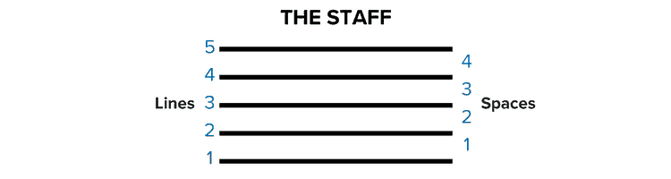
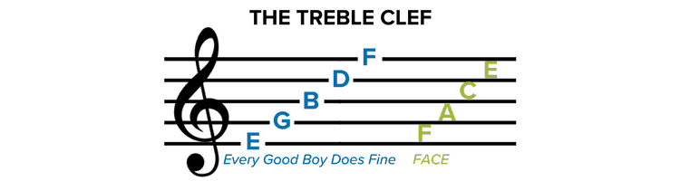
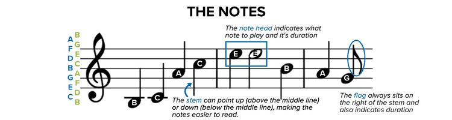
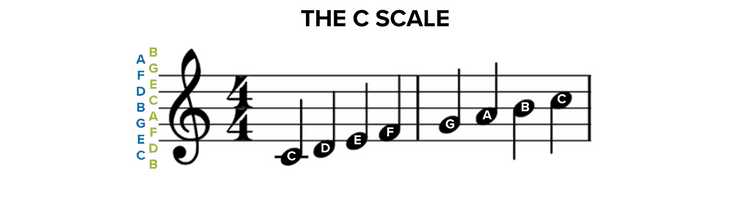

Gamifying the learning of musical notes
About
In music, sight-reading is the practice of reading and performing of a piece in a music notation that the performer has not seen or learned before.
This sight-reading application is developed by "beginner musician for beginners". We believe that gamifying the learning of musical notes will provide young learners a fun learning experience to improve their ability to sight-read musical notes over 3 octaves in terms of their accuracy and speed.
Below are some basic music notations for reference. Encourage your children or students to give it a go. Psst.. it's free!
Learn the Basic Symbols of Musical Notation
Music is made up of a variety of symbols, the most basic of which are the staff, the clefs, and the notes. All music contains these fundamental components. You must first familiarize yourself with these basics to learn how to read music.
The Staff
The staff consists of five lines and four spaces. Each of those lines and each of those spaces represents a different letter, which in turn represents a note. Sheet music notes, represented by lines and spaces, are named A-G, and the note sequence moves alphabetically up the staff.
Treble Clef
The treble clef has the ornamental letter G on the far left side. The G’s inner swoop encircles the “G” line on the staff. The treble clef notates the higher registers of music, so if your instrument has a higher pitch, such as a flute, violin, or saxophone, your sheet music is written in the treble clef. Higher notes on a keyboard also are notated on the treble clef.
We use common mnemonics to remember the note names for the lines and spaces of the treble clef. For lines, we remember EGBDF by the word cue “Every Good Boy Does Fine.” Similarly, for the spaces, FACE is just like the word “face.”
Music Symbols and Notes on a Staff
Notes placed on the staff tell us which note letter to play on our instrument and how long to play it. There are three parts of each note, the note head, the stem, and the flag.
All music notes have a note head, either filled (black) or open (white). Where the note head sits on the staff (either on a line or space) determines which note you will play. Sometimes, note heads will sit above or below the five lines and four spaces of a staff. In that case, a line (known as a ledger line) is drawn through the note, above the note or below the note head, to indicate the note letter to play, as in the B and C notes above.
The C Major Scale
A scale is made of eight consecutive notes. For example, the C major scale is composed of C, D, E, F, G, A, B, C. The interval between the first note of the C major scale and the last is an example of an octave. Each of the notes of the C major scale corresponds with a white key on your keyboard. Here’s how the C major scale looks on a staff and how that corresponds to the keys on your keyboard.

Congratulations! You are now ready to play the game.. Have fun!
Contact Us